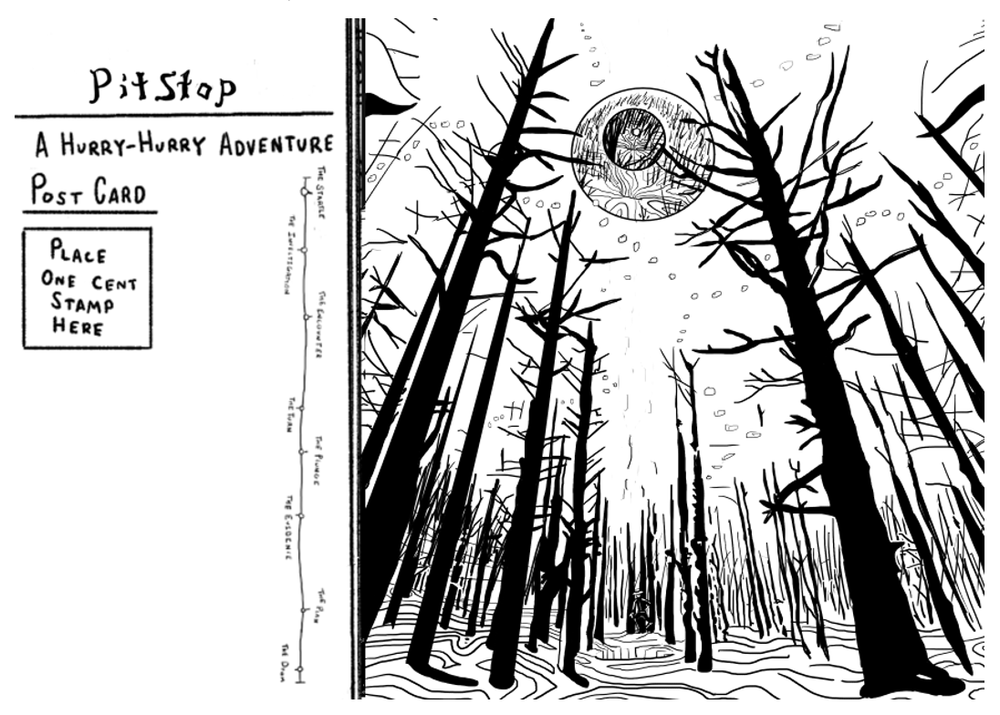

← Back
Book Selection
Penny Dreadfuls: Starting Books

Pitstop
Starting DOOM 60
- A Strange Inpatient
- Visceral Nightmares
- A Spot In The Woods
The EMTs working the late shifts always seem to get the worst calls. For Belmont State Hospital it's no different, but they seem to have run into a problem that medicine alone can’t seem to solve. According to one of your friends working there, his name is Patrick Tellany, a local gas station owner who contacted emergency services six times in the past two weeks. The first diagnosis was a gallstone, then retinal keratosis, then carbon monoxide poisoning, and so on. Every time he’s checked into the hospital it seems to be a different problem. Stranger still, his old issues seem to fade away. Members of the night staff have reached out to you, not just worried about the old man’s lurching medical bills, but out of fear for Patrick's safety, not to mention their own. It's a small favor, but they’ve asked you to shadow him for a few nights, just to see if he is managing alright on his own. The job should be a quiet one, even a welcomed break, but you can’t help but feel disconcerted. Especially if you stop to hear about the things he has to say about the woods.

All Roads
Starting DOOM 60
- A Dark Cult
- A Vacation Gone Wrong
- A Hideous Pact
Pen it down. Nothing could go wrong on a rural ski retreat into the mountains of Italy. Nevermind, a few missing persons reports and strange animal attacks. The venue’s all set, and only a short bus ride away from Rome. Ah, what serene secrets that marble capital must hold! You simply must visit the temples there. Yes, yes, visit the Colosseum and Pantheon of course, but also keep an eye out for the churches of the Eternal City. Lest you forget, its walls have served host to the Roman deities, the burgeoning of Christianity, and chthonic faiths too. I’ll bet you yet some ancient shrine can still be found there, torn apart, brick by brick, and layered in its graven walls, just waiting to be unearthed. Oh, and Italian cuisine is to die for!

Three Stars
Starting DOOM 50
- A Heist Gone Wrong
- A Haunted Mansion
- A Mysterious Patron
In 2012, Business Insider named 1095 Larker Boulevard one of the ugliest McMansions ever constructed. Now, almost 10 years later, you have found yourself tied up in an intricate conspiracy within the house’s walls. A man named Tim Barker, has contacted you with suspicions that the home is in fact being used as a criminal safe house with smuggled contraband tucked just within its suburban facade. Its current owner Laurence Wade, Esquire, a rather famous state prosecutor, has just left town with his family to accept a rather prestigious award at a national legal conference. With the tight window between opportunity and detection supposedly narrowing, you prepare for the one proper recourse: a heist. Nondetection, burglary, and dramatic contingency are at the front of your forte and this break in will be nothing if not smooth. But as for the break out… If only you knew what you were stealing. Oh, Lord if only you knew what you were stealing.